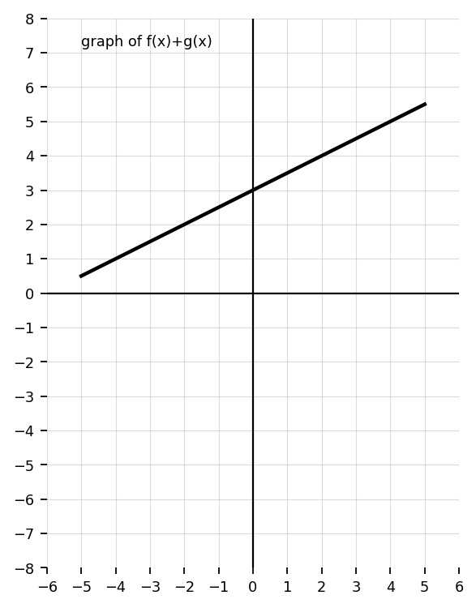
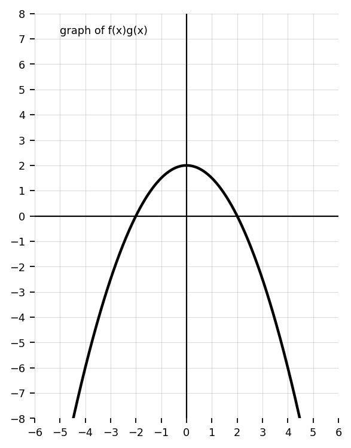
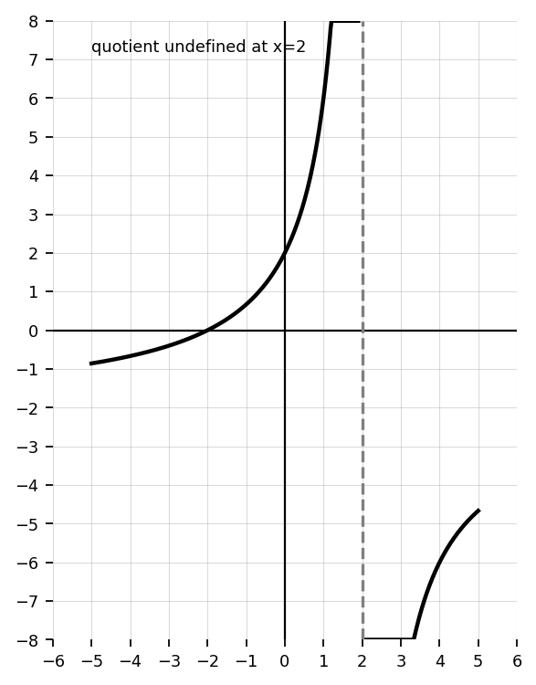
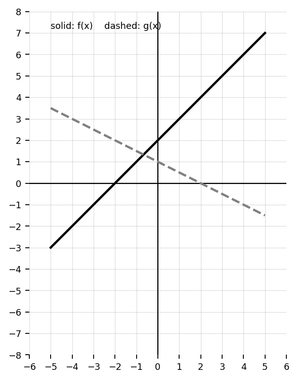
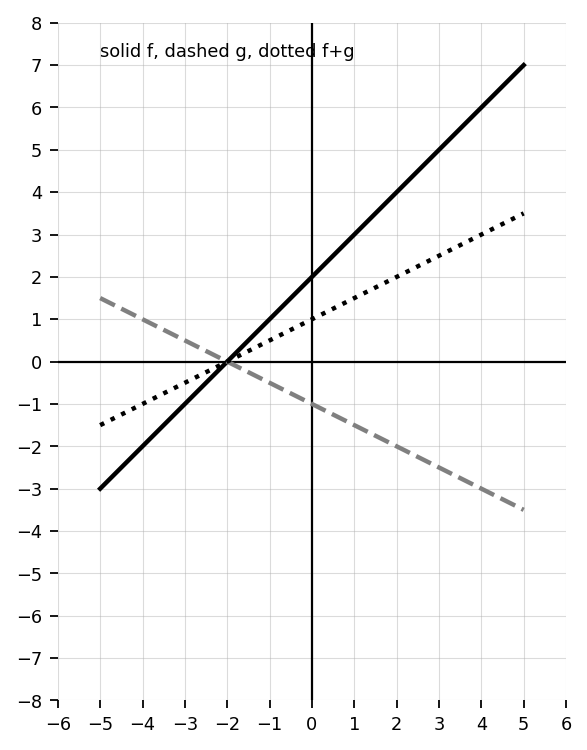
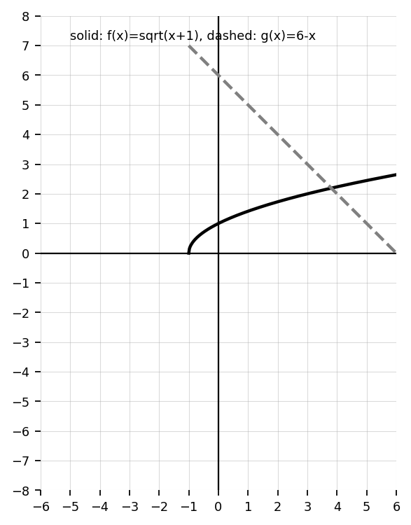
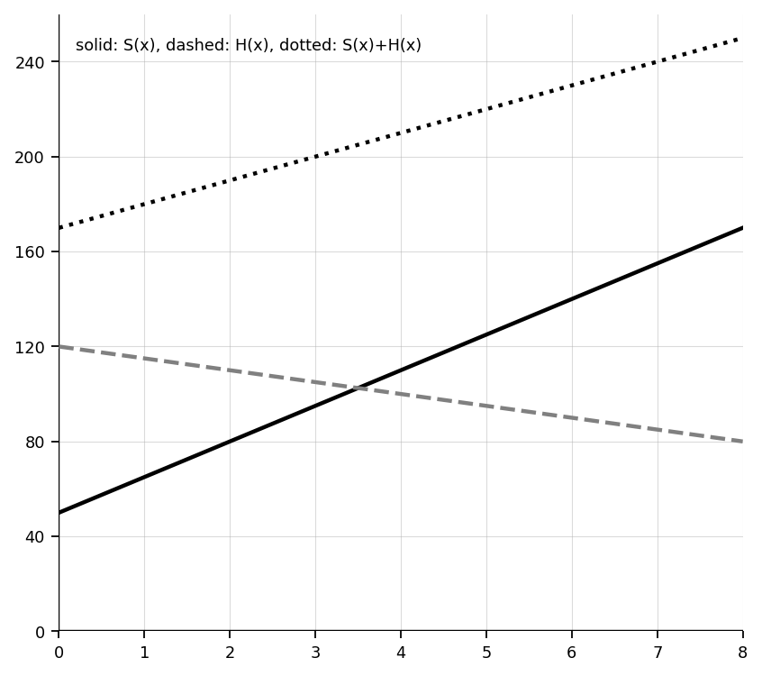

Unit 2 Section 2.2: Function Arithmetic
Section 2.2 Teacher Question Bank
Let \(f(x)=2x+3\) and \(g(x)=x^2-4\).
- Find \((f+g)(x)\).
- Find \((f-g)(x)\).
- Find \((fg)(x)\).
Let \(f(x)=x+5\) and \(g(x)=x-2\).
- Find \(\left(\frac{f}{g}\right)(x)\).
- State the value of \(x\) that must be excluded from the domain.
The graphs of \(f\) and \(g\) are shown.
- Estimate \(f(2)\) and \(g(2)\).
- Estimate \((f+g)(2)\).
- Estimate \((f-g)(2)\).

Use the table to evaluate each expression.
| \(x\) | \(-2\) | \(0\) | \(3\) |
|---|---|---|---|
| \(f(x)\) | \(5\) | \(1\) | \(-4\) |
| \(g(x)\) | \(-2\) | \(6\) | \(3\) |
- \((f+g)(0)\)
- \((fg)(-2)\)
- \(\left(\frac{f}{g}\right)(3)\)
Let \(p(x)=x^2\) and \(q(x)=3x\).
- Find \((p+q)(4)\).
- Find \((p-q)(-2)\).
- Find \((pq)(1)\).
Fill in the blanks.
- \((f+g)(x)=\) ____________________
- \((f-g)(x)=\) ____________________
- \((fg)(x)=\) ____________________
- \(\left(\frac{f}{g}\right)(x)=\) ____________________, where \(g(x)\neq\) ________.
Let \(f(x)=\sqrt{x}\) and \(g(x)=x+1\).
- Find \((f+g)(9)\).
- Find \((fg)(4)\).
- Explain why \(x=-1\) is not useful for evaluating \(f(x)\).
Let \(f(x)=x^2-9\) and \(g(x)=x-3\).
- Find \(\left(\frac{f}{g}\right)(x)\).
- Simplify the expression.
- State the excluded value before simplification.
Let \( f(x)=3x-2 \) and \( g(x)=x+5 \).
- Find \((f+g)(x)\).
- Find \((f-g)(x)\).
Let \( f(x)=x^2 \) and \( g(x)=2x \).
- Evaluate \((fg)(3)\).
- Evaluate \(\left(\frac{f}{g}\right)(4)\).
Use the table.
| \(x\) | \(-1\) | \(0\) | \(2\) |
|---|---|---|---|
| \(f(x)\) | \(3\) | \(1\) | \(5\) |
| \(g(x)\) | \(2\) | \(-4\) | \(1\) |
- Find \((f+g)(0)\).
- Find \((fg)(2)\).
State the domain restriction for:
\(\frac{x+1}{x-7}\)
True or False:
If \(g(x)=0\), then \(\frac{f(x)}{g(x)}\) is undefined.
Explain briefly.
Match each operation to its description:
- sum
- difference
- product
- quotient
Descriptions involve combined totals, comparisons, scaling, and remaining amounts.
Let \(f(x)=x^2-1\) and \(g(x)=2x+5\).
- Find \((f+g)(x)\).
- Find \((f-g)(x)\).
- Find \((fg)(x)\).
- Find \(\left(\frac{f}{g}\right)(x)\) and state its domain restriction.
Let \(f(x)=\sqrt{x+2}\) and \(g(x)=x-1\).
- Find \((f+g)(x)\).
- Find \((fg)(x)\).
- State the domain of each combined function.
Let \(f(x)=\frac{1}{x-4}\) and \(g(x)=x^2\).
- Find \((f+g)(x)\).
- Find \((fg)(x)\).
- State the domain restrictions.
The graph shown represents \(f(x)+g(x)\).
- Estimate \((f+g)(-2)\), \((f+g)(0)\), and \((f+g)(4)\).
- Explain how the sum graph relates to the values of \(f\) and \(g\).

The graph shown represents a product \(f(x)g(x)\).
- Identify the \(x\)-intercepts of the product graph.
- Explain why zeros of either factor become zeros of the product.

The graph shown represents a quotient \(\frac{f(x)}{g(x)}\).
- What value of \(x\) appears to be excluded?
- Explain why a zero of the denominator creates a domain restriction.

Use the table to compare function operations.
| \(x\) | \(-1\) | \(0\) | \(1\) | \(2\) |
|---|---|---|---|---|
| \(f(x)\) | \(4\) | \(3\) | \(0\) | \(-2\) |
| \(g(x)\) | \(2\) | \(-1\) | \(5\) | \(0\) |
- Find \((f+g)(1)\).
- Find \((fg)(0)\).
- Find \(\left(\frac{f}{g}\right)(-1)\).
- Explain why \(\left(\frac{f}{g}\right)(2)\) is undefined.
A student simplified \(\frac{x^2-9}{x-3}\) to \(x+3\) and said the domain is all real numbers.
- What did the student do correctly?
- What domain detail did the student miss?
- Write the correct simplified expression and domain restriction.
The graphs of \(f\) and \(g\) are shown.
- Estimate \((f+g)(1)\).
- Estimate \((f-g)(-2)\).
- Estimate \((fg)(0)\).
- Explain how you used the graphs.

Given:
\(f(x)=\sqrt{x+4}\qquad g(x)=\frac{1}{x-2}\)
Determine the domain of:
- \(f+g\)
- \(fg\)
Explain your reasoning.
A company tracks daily expenses \(E(x)\) and daily revenue \(R(x)\).
Explain what:
- \(R(x)-E(x)\)
- \(\frac{R(x)}{E(x)}\)
would represent in context.
Compare:
\((f+g)(x)\qquad \text{and}\qquad f(x)+g(x)\)
Are these equivalent notations? Explain.
Given:
\(f(x)=x^2-9\qquad g(x)=x-3\)
- Simplify \(\frac{f(x)}{g(x)}\).
- Explain why the domain restriction still exists after simplification.
Use a graph to estimate where:
\((f+g)(x)=0\)
Explain how the graphs help you determine the estimate.

A fundraiser has revenue \(R(x)=12x+40\) and cost \(C(x)=8x+100\), where \(x\) is the number of items sold.
- Write a function for profit \(P(x)=R(x)-C(x)\).
- Interpret \(P(10)\) in context.
- Explain why subtracting functions makes sense in this situation.

Let \(f(x)=x^2-4\) and \(g(x)=x-2\).
- Find \(\left(\frac{f}{g}\right)(x)\) and simplify.
- Explain why the simplified expression does not have the same domain as \(x+2\).
- Describe what would happen on a graph at the excluded input.
Compare the functions \(f+g\), \(fg\), and \(\frac{f}{g}\). Use \(f(x)=x+1\) and \(g(x)=x-4\).
- Write each combined function.
- Compare their domains.
- Explain why the quotient requires more caution than the sum or product.
A student claims, “If \(f\) and \(g\) are both defined for all real numbers, then \(\frac{f}{g}\) is also defined for all real numbers.”
- Is the claim true?
- Use an example to test the claim.
- Write a complete explanation.
Let \(f(x)=\sqrt{x+1}\) and \(g(x)=6-x\).
- Find the domain of \(f+g\).
- Find the domain of \(fg\).
- Find the domain of \(\frac{f}{g}\).
- Explain why the quotient has one additional restriction.

Explain the difference between simplifying a quotient of functions and changing the function itself.
Use \(\frac{x^2-1}{x-1}\) as your example. Mention excluded values, holes, or domain restrictions.
Use structure to determine whether each statement is always, sometimes, or never true.
- The domain of \(f+g\) is the intersection of the domains of \(f\) and \(g\).
- The domain of \(fg\) is the union of the domains of \(f\) and \(g\).
- The domain of \(\frac{f}{g}\) must exclude inputs where \(g(x)=0\).
Justify each answer.
Two students are comparing \((f+g)(x)\) and \(f(g(x))\).
- Explain why these are different operations.
- Create a pair of functions where \((f+g)(2)\neq f(g(2))\).
- Explain how notation prevents confusion.
A student says:
“If two functions have the same domain, then all operations on them will also have the same domain.”
Is this true? Use examples and explanations to justify your answer.
Compare the domains of:
- \(f+g\)
- \(fg\)
- \(\frac{f}{g}\)
Explain why the quotient operation behaves differently.
Explain why:
\(\frac{x^2-4}{x-2}\)
and
\(x+2\)
have different graphs even though they simplify algebraically.
Create two functions where:
- the sum is defined
- the quotient is not defined for all real numbers
Explain why.
Create two functions \(f\) and \(g\) so that:
- \((f+g)(x)\) is linear.
- \((fg)(x)\) is quadratic.
- \(\frac{f}{g}\) has an excluded value.
Explain why your choices satisfy all three conditions.
Design a pair of functions \(f\) and \(g\) where \(\frac{f}{g}\) simplifies algebraically but still has a hole in its graph.
- Write \(f(x)\) and \(g(x)\).
- Simplify \(\frac{f}{g}\).
- State the original domain restriction.
- Explain what the graph would show.
Create a real-world situation involving two quantities where adding, subtracting, multiplying, and dividing functions each have different meanings.
For each operation, describe what the new function would represent.
A school store sells shirts and hats. Let \(S(x)\) be shirt revenue and \(H(x)\) be hat revenue after \(x\) days.
- Create reasonable functions \(S(x)\) and \(H(x)\).
- Write and interpret \((S+H)(x)\).
- Write and interpret \((S-H)(x)\).
- Explain whether \(\frac{S(x)}{H(x)}\) has a meaningful interpretation.

A student argues that function arithmetic is “just combining equations,” so domain does not need to be checked separately.
- Critique the student’s argument.
- Give at least two examples that show why domain matters.
- Write a corrected explanation that could be used as a class note.
Design a real-world situation where:
- adding functions makes sense
- multiplying functions makes sense
- dividing functions does NOT make sense
Explain your reasoning.
Create two functions whose quotient:
- has a removable discontinuity
- simplifies algebraically
- still requires a restricted domain
Explain completely.